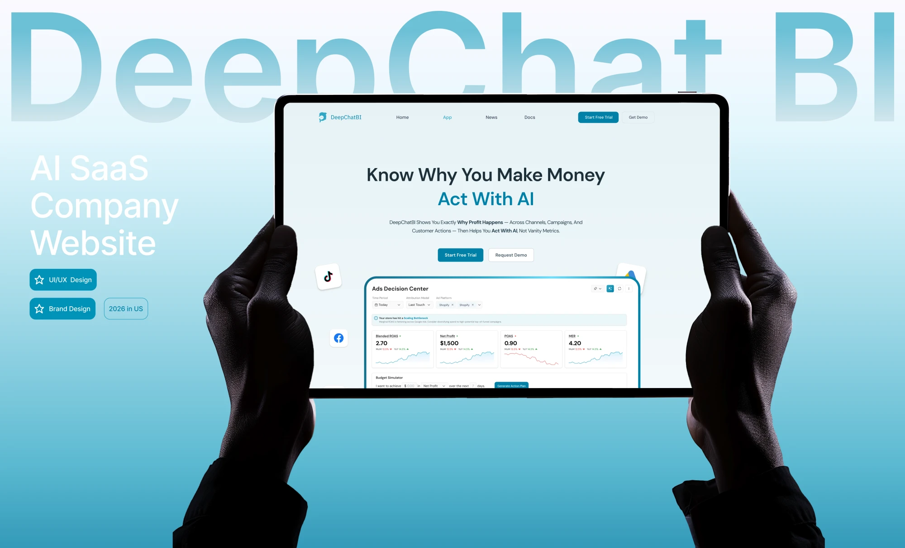

Yuqian Cheng
AI Product Designer
AI 硬件产品的软件体验设计师｜录音 / 墨水屏多端 App · AI 整理 Agent 功能｜中英德
AI 产品设计师｜Agent 工作流与 B 端数据产品 · 软硬结合多端经验｜中英德
关于
你好！我是雨芊 —— 硅谷 AI 科技公司 DeepChatBI 的 AI 产品设计师，以 UX / 交互设计师的身份贯穿整个产品链路。
我主导了对话式 BI SaaS 产品 ChatBI 从 0 到 1 的完整周期 —— 从用户研究、产品流程规划（含「数据接入 → 洞察分析 → 智能行动 → 自动执行」的四阶段 Agent 旅程），到交互与视觉设计、测试，以及上线前设计走查。在 AI 时代，我正在超越纯 UI/UX 设计师的核心优势，变成走向独立推动产品端到端开发并承担成果的产品设计师。
2026 年，我在 AI 硬件公司 Flowtica（深圳）把这套能力带进软硬件结合的多端产品：负责「帮你理」AI 整理功能在 Web / Mac 的主链路与全部边缘场景、Verso 墨水屏名片的 iOS 页面流程，并保证 iOS / Mac / Android / Web 多端同步一致。
背景
埃森美术学院（HBK Essen）数字产品设计学士（2020.09–2025.04），本科方向就是软硬件结合的智能硬件与消费电子产品设计；获拉夫堡大学（Loughborough）服务设计硕士录取（2025.09）—— 选择全力投入 AI 行业。
目前正在中国寻找 AI 产品相关职位。
Works
精选项目已上线 AI 产品 · 价值判断与利益相关方沟通

DeepChat BI AI Agent SaaS Product
揭示利润真相的 AI Agent · 硅谷 AI 公司 · 0→1

帮你理 · AI 整理功能
Flowtica · Web / Mac 多端同步 · 一个入口承接文字、图片、语音

I Love Financial Forms
AI 财务工作空间 · 0→1 · 设计师驱动前后端落地

Verso 名片 · iOS 页面流程
Flowtica · 墨水屏 NFC 名片 · 软硬件结合的多端链路

DeepChatBI Website
公司官网 · PC + 移动端端到端重设计
热情项目 · 问题定义 & 系统思维 & 个人审美养成
职业经历
（主线）Flowtica · UI/UX 设计师（iOS / Mac / Android / Web 多端）
- 负责「帮你理」AI 整理功能 Web / Mac 端的主链路与全部边缘场景设计（85 块画板），上线后做两端验收，推动开发按 PRD 修复。
- 交付 Verso 墨水屏名片的 iOS 页面流程（47 帧：入口、名片主页、Update 流程与异常态、壁纸预览），并完成 PRD 拆解、交互图鉴与竞品图鉴。
- 搭建 Mac Todo 组件集（3 个母组件 + 52 实例覆盖板）；Share & Export 换用苹果原生 Activity View；What's New 改版、自动转写设置、Onboarding 打字机动效、德语 Settings 审校。
- 用自研 Figma 插件与 AI 写入通道做 PRD ↔ 设计稿覆盖审计与批量组装，保证多端同步一致。
DeepChatBI · AI 产品设计师 / UIUX 设计师
- 主导 ChatBI（AI 商业分析 SaaS）的 0-1 体验设计——规划「数据接入 → 洞察分析 → 智能行动 → 自动执行」四阶段 Agent 旅程，并保留 human-in-the-loop 控制，把多日的导出-分析-决策流程压缩成产品内实时闭环（内部估算）。
- 主导 PC + 移动端官网的端到端重做，重做官网后显著提升主 CTA 互动（内部估算）。
- 搭建跨平台设计系统，把交互 + UI 迭代周期约缩短一半（内部估算）。
Omnigence AI · 产品经理 兼 设计师
正式产品部署在客户私有环境中——下方公开的功能演示沙盒提供可上手体验（密码：Ilovefinancialforms）。
- 主导 I Love Financial Forms（AI 智能财务办公系统）的 0-1 设计——双轨输入、可见的 Agent 推理与分组式 human-in-the-loop 校验，消除了绝大部分重复手工操作（内部估算）。
- 以 PM 兼设计师身份调研对接 50+ 目标企业、深度访谈 5 家核心客户，并主导上线前设计 QA 直至发布。
服务设计硕士 · 拉夫堡大学
被拉夫堡大学（英国毕业生就业率排名第一）服务设计硕士录取；选择直接进入 AI 行业。
交互设计自学（INTERACTION DESIGN）
埃森美术学院（HBK ESSEN）
数字产品设计 · 文学学士（BA）· 软硬件结合的智能硬件与消费电子产品设计
德国规模最大、最负盛名的精英私立艺术院校之一
和朋友们一起玩耍！
作品 · 活动 · 展览 · 动态奖项
重要设计奖项（节选）YD 设计奖 两项一等奖、一项二等奖
Dec, 2024全国青年设计师大赛 二等奖
Nov, 2024Better Design Award 优秀奖
Nov, 2024